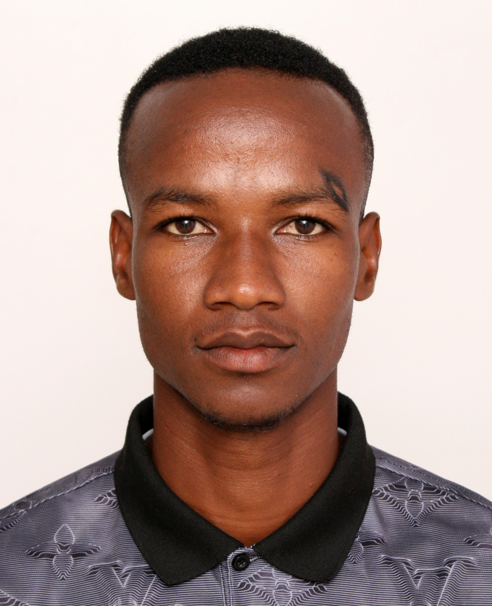

John S. Aghato

Summary
Adaptive physical education teacher with extensive experience managing classrooms and athletic programs for students with diverse abilities.
Passionate about integrating technology and interdisciplinary approaches to promote growth in the global health and fitness industry.
Currently seeking to advance skills in web and app development to create innovative solutions, including a collaborative platform where PE teachers worldwide can share ideas, resources, and best practices to enhance student outcomes.
Education
Master’s Degree in Elementary Education
University of Alabama
February 2024 – Present
Bachelor’s Degree in Physical Education and Sports Sciences
University of Dar es Salaam, Tanzania
August 2015 – November 2018
Web Development Course
Udemy
Ongoing
Work Experience
Physical Education Teacher
Westhill Institute - Santa Fe Campus
Mexico City, Mexico
August 2023 – Present
- Develop and implement PE curriculum for students in grades 1–6, aligning with IB standards and conducting skill assessments.
- Maintain communication with school administration and parents in an English Medium Instruction (EMI) environment at a Pre-K–12 American International School.
- Coach extracurricular swimming and soccer, teaching fundamental techniques, fostering teamwork, and improving beginner and intermediate athlete performance.
- Conduct agility drills, strength training, and stretching exercises to ensure safe movement and enhance physical development.
Physical Education Teacher
Aga Khan Nursery and Primary School
Dar es Salaam, Tanzania
August 2022 – July 2023
- Designed and implemented PE curriculum for diverse student populations in a private IB primary school setting.
- Conducted educational and skill assessments while maintaining regular communication with parents in an EMI environment.
- Supervised extracurricular soccer programs for students aged 2–13, focusing on foundational skills and sportsmanship.
- Led health and nutrition tutoring sessions to promote holistic well-being among students.
Academy Coach
Gymnastics Academy of Tanzania
Dar es Salaam, Tanzania
August 2018 – July 2023
- Delivered individualized and group gymnastics instruction for children aged 3–15 at various skill levels, emphasizing safety, strength, and performance.
- Developed and executed lesson plans tailored to students’ needs and abilities.
- Managed administrative tasks, including consent forms, medical releases, and accident reports.
Skills
Soft Skills:
- Communication
- Leadership
- Team Building
- Adaptability
Technical Skills:
- Web Development (HTML)
- Educational Technology Tools
- LMS
Coaching:
- Soccer
- Swimming
- Gymnastics
- Strength & Conditioning
Languages:
- English (Fluent)
- Swahili (Native)
- Spanish (Elementary)
Other